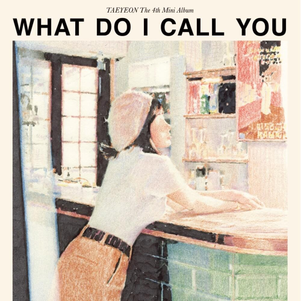
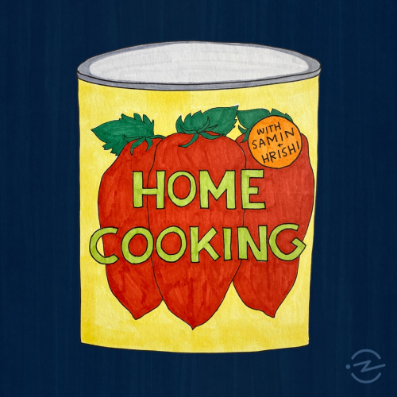

CURRET OBSESSIONS

WHAT DO I CALL YOU
EP by Taeyeon

HOME COOKING
Podcast

START-UP
K-drama
Hey y'all! I am a creative who loves to explore various digital mediums like photography, graphic design, and wireframing. In my free time, you can catch me brushing up on these skills.
A cool fun fact about me is that my parents own a bakery in the Eden Center, the largest Vietnamese shopping center on the East Coast! Also, I grew up in a Vietnamese-Chinese household. My story confuses a lot of people but long story short: my family is ethnically Chinese but they just were born and raised in Vietnam.
I enjoy trying out new foods, testing the latest skincare craze, and scrolling through Twitter memes! My perfect day would consist of a morning workout, doing some work in a cute cafe, cheffing up a new recipe for dinner, and doing my elaborate skincare before bed.
I've always had a curiosity to keep learning as a child. I'm currently learning different analytical software and honing my design skills to better myself as an explorer
I love trying out different skincare products to see what works best for me! As someone with combo skin, the journey does get tricky! Current favorite skincare lines include The Ordinary, Purito, and First-Aid Beauty.
Ah yes, food -- my first and only love! I love trying out new dishes at the hottest restaurant in my town. Current obsessions include Korean cheesedogs, Hawaiian food, and soup dumplings.
My unique upbringing has fostered my appreciation of different cultures and languages. I am currently self-teaching Mandarin whenever I have time to unwind and relax.
EP by Taeyeon
Podcast
K-drama